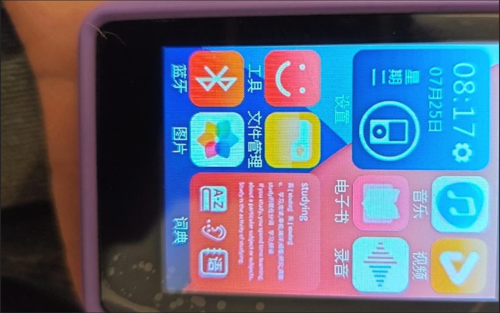
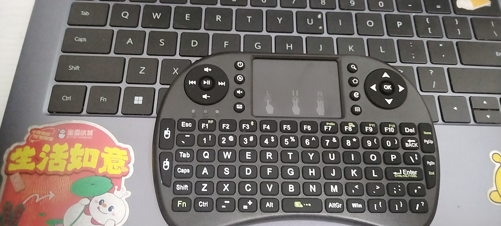

枯燥的校园生活令人窒息，繁重的课业压力让人不堪重负，对于中学生，适当的放松是很有必要的。
然而根据国家相关规定，中小学生原则上不允许带手机进入课堂，几乎所有学校都以影响学习为由禁止使用手机和其他电子产品，更有甚者（点名批评株洲市XX中学）禁止携带电话手表，词典笔等，只要是能充电的都不让带，而且带了被发现便是通报批评or记过，每个月还在批斗大会上扣帽子，就差让那些带手机的人戴个牌子游街示众了。
学校颁布这些规定，不仅是满足“防止学生沉迷耽误学习”的私欲，究其原因还是为了迎合相关规定，五项管理也就手机管理搞得最狠，这些敏感话题我不多做评价，因为这并不属于文章范围内。
总之，上有政策，下有对策，这篇文章将指导您如何保证安全的情况下获得最大限度的快乐。
“没有调查，就没有发言权。”为了保证本文科学性以及可行性，我在学校内对多名同学进行了调查，在此对受访同学表示感谢！
首先说明一下，我个人**非常不建议将手机带入学校**，因为手机一旦被没收，损失对于学生来说是非常大的，所以本文的重点并不是如何藏手机，而是寻找其他替代方案，本文优先讲解使用电子设备，对于其他途径（例如下五子棋，看小说）不在此文讨论范围内
本文将分为以下几个部分：
- 我为什么要带
- 我能带什么
- 我应该藏在哪
- 我应该怎么用
- 注意事项
文章比较长，希望您能耐心看完，定会有所收获。此外，如果您对本文有任何看法，欢迎直接邮箱联系或发pr！
我为什么要带
事实上，带不带随你，但是如果你需要一个很好的娱乐方式，电子产品绝对是最佳选择。在教室里，每一寸角落都是公共的 ，在课表上，每一分钟都规划好了。而一个属于自己的播放器，一首自己喜欢的歌，都是在一堆密不透风的墙中凿开一个孔。我们之所以触犯规则的红线，是因为学校触犯自由的底线。
我该带什么
请注意，本节不包括任何商业广告，所有评价全凭个人主观感受，仅供参考。
MP4
推荐程度：★★★★
市场价：40-200
目前，市面上有两种MP4，一种是封闭系统传统MP4，屏幕观感极差，分辨率通常不超过240P，只能听歌或看一些视频（一个MP4竟然不支持MP4等常用格式，必须转成amv，非常麻烦，除非你会用ffmpeg）但是价格还算比较便宜，在pdd上大部分品牌都只要40元左右，并且主机个头比较小，还是比较好藏的（下图来源于网络）
这种传统的MP4对于320kbps的MP3音乐还是能解得出来，但受限于硬件，表现效果也不尽人意。对于FLAC的支持就更有限了，实测超过20mb的文件就无法播放。续航方面平时充满电每天听一两个小时能用一周，表现尚可。
还有一种MP4使用安卓系统，市场价就稍微贵了点，要一百多两百多，但可玩性就大大提高了。播放本地音乐视频对于这种机子来说只能是副业，我手头上有一个安卓8联发科处理器2+16GB的MP4，可以玩一些小游戏，以及微信QQ聊天（需要装精简版或手表版，我用的QQPro），甚至还能使用AIDE或Termux装Vim写代码，带到学校里是非常爽的，只可惜续航稍微拉胯，只听歌的话用一周没大问题，但WIFI上网看视频就要一天三充了。

在这里，我也要提醒大家，MP4是虚假宣传的重灾区，网上一搜基本上是宣传什么HiFi音质，实际上拿到手效果还不如丁真的烟嗓，部分安卓MP4甚至还说什么王者吃鸡流畅玩，实际上。。。怎么说，哔哩哔哩都卡的一批，除了云游戏想都别想。但是你都来蹲监狱了，有总比没有好。现在这台安卓MP4可以刷贴吧，收发电子邮件，订阅自己喜欢的rss，以及用vlc看一些标清视频，还是能为枯燥的校园生活带来些许慰藉。
这时候，有人可能要问了，我有两百块为什么不买个二手手机？确实，我手头上这个只能算个电子垃圾，续航也差到离谱，用这些钱完全可以买个几年前的品牌手机，性能吊打联发科。但是还是那句话，不推荐带手机。手机不好藏，太大了，而我手头上这个只有4寸屏。
优点：体积较小，功能全面
缺点：效果可能不符合预期
MP3
推荐程度：★★★
市场价：20r以内
MP3的作用自不必多说，能听歌就行，买便宜的就行，炸不死你就行。其实大部分廉价MP3的音质都呕哑嘲哳难为听，如果你对音质敏感，或者有更高级的需求（例如看小说看电影，或播放FLAC无损音乐）还是建议你使用MP4。
优点：体积小，便宜
缺点：功能少
迷你蓝牙键盘
推荐程度：★★★
市场价：12-20r（这东西很便宜，千万不要买贵了）
看到这里，也许你会感到疑惑，但聪明的你很快就能明白。想象一下，班上的多媒体的光标突然自己动起来，让同学们以为有黑客入侵。老师不让我们动班上电脑，那就坐在座位上远程操控，打开视频或游戏，老师一来就立刻按下alt+tab，就像什么事都没发生。我手上就有一个12块包有的迷你键盘，两节七号电池供电，蓝牙连接。它不仅有较全的键位，还有一块很小的触摸板。但问题是那个触摸板用起来真的很难受，指针总是乱飘，而且虽然键位是标准的QWERTY布局，但很多按钮移了位，比如win键在右边，上下左右键在上面，-和=键不在0键的右边，而在左下角，因此额外学习成本很高，我也总是打错字。它的手感也让人难以接受，它连薄膜键盘都不是，只能说是一个键很多的遥控器（遥控器按钮手感都比这个好）因此如果你想用这个键盘码字，还是建议使用常规键盘。
但好处是它的连接距离真的很远，在教室最后一排都能连得上。我们班上有一个就用这个键盘拿班上电脑玩钢铁雄心4，一下课就在那里抗日（学校垃圾配置是怎么带的动这种游戏的呢？请见《我和AbCd白嫖了一台12代i5电脑！》详细介绍了Windows rdp来占用其他公共电脑。）我没记错的话智教联盟上也有人推荐过，具体情况大家试试吧。
优点：功能强大，隐蔽性好，性价比高
缺点：完全依赖外部设备，操作不灵敏，学习成本高
华强北山寨手表
推荐程度：★★
市场价：？？？
这种机子其实并不是很推荐，续航和发热都令人难以接受，开个QQwear可以给你手臂烫掉一层皮，性能也很差，虽然它屏幕小，好藏，但是这也是它最大的弱点。之前我在学校违纪通报名单上看到一张照片，一位同学用这种手表玩斗地主，卧槽。。这屏幕。。怎么玩的下去的
优点：隐蔽性最好
缺点：性能最差，体验不好
词典笔
推荐程度：★★★
市场价：？？？
如果学校本来就允许使用词典笔那就忽略这一节，我们学校不准用任何电子产品（包括词典笔，单词机等）因为，词典笔真的可以听歌，打游戏。。。
优点：若不违规可直接使用
缺点：也属于违禁品范畴内
迷你游戏机
推荐程度：★
市场价：15r以内
这种东西可玩性并不高，因此我不是很推荐，很容易玩腻，而且还有声音
DIY播放器
推荐程度：？
市场价：看情况
如果你有一定动手能力的话，可以考虑去找一块板子（卖废品的应该有，或者去老师的小蜜蜂里拆，当然那种扩音器板子直接接喇叭，不清楚怎么转到3.5mm耳机孔）我手上就有一个MP3功放，可以插U盘或TF卡，用的杰里的方案，将这种电路藏在一些常用物品中，谁都发现不了。事实上，你有这些功夫折腾还不如买现成的，但主要是这种动手的体验感。
我应该藏在哪？
也许大家听过一句老话：最危险的地方就是最安全的地方。这句话在这里也起作用。我们学校校服口袋上有拉链，将MP4或mp3放进去，没人看得到，这不是信口胡诌，而是实实在在的案例：我有一个寄宿的同学，在两个月前就随身携带MP4，机器从不离身，至今还带着，也许我写这篇文章的时候他还在宿舍里戴着耳机听歌呢。
如果你不放心，担心从口袋里露出来或者被老师搜身，不妨试试给一些较厚且硬皮的书（例如字典）开洞，将东西放进去。较厚不用多说，硬皮是很重要的，不然鼓起来了很明显。此外，如果你戴眼镜，也可以将东西放在眼镜盒内。需要注意的是，最好将东西分开存放，例如将充电线夹在书包里，把MP4放在眼镜盒里，把耳机放在课桌里。这样即使任一配件被收，问题也不大，不至于牵一发而动全身。
另外，根据一位住宿生分享，将设备藏在带锁的行李箱中也是一个不错的方法（如果你所在的学校允许上锁的话）一些体积较大的不锈钢水壶也可以藏匿电子设备。
当然，根据我的观察，除非你作死当着老师用，否则他们不会闲着没事干总翻你书包。笔者曾经连续带了两周电子产品，未被抓获，因为我不会随意拿出使用。我们的违纪名单上永远是“违规使用电子设备”，而不是“违规携带电子设备”现在，我们从where转到how。
我应该怎么用
首先，你要知道，永远不要完全信任你身边的人，除了与你最亲的朋友。设想一下，某天你带了一个新奇玩意来学校，某个同学甲看到你脖子上的耳机便也想试试，倘若你答应，甲也许会跟乙说：你知道吗？xxx带了xxx。。。如此一传十十传百，这不纯找死吗？所以，不要炫富，不要装逼，带了就好好收好。晚上的时候屏幕太亮了怎么办？躲被子里，或者干脆别用，直接熄屏听会歌得了。我也不建议你晚上睡觉时盯着屏幕，一是对视力不好，二是看一半睡着了第二天起来容易被发现，所以最好的办法就是晚上只听，让眼睛休息一下，开个定时关闭。
另外，不要在上课时间（包括自习课）使用。我知道大家可能喜欢边听歌边写作业，但我们学校已经抓出来很多了，我们可以善用离开教学区域的时间。什么叫“离开教学区域的时间”？以我们学校为例，我们的教学楼分两种类型，一种是纯教学，一种是全是实验室和电脑室，在非文化课教学区域使用是非常安全的，当然我不敢确定所有学校亦如此，视实际情况而定。我们有信息奥赛课，反正一边在洛谷享受coding的乐趣（并非）一边听歌真的很舒服，当着老师面打开屏幕切歌没点事。
这里我再讲一讲耳机的使用方法：无论是有线耳机还是蓝牙耳机，都只戴半边，戴的那边应该朝内。如果你正在写作业，不妨用手盖住耳机，做出思考的样子，当然长时间保持这个姿势也容易被人怀疑。此外，我建议有条件的同学使用蓝牙耳机，如果只有有线耳机的话可以把耳机线从衣服里穿过去，在冬天可以把校服的帽子竖起来（如果有），在夏天如果校服是浅色系的，而你的耳机线又正好是白色，那不就是天然的保护色吗？
注意事项
- 安全第一 永远不要高估自己的隐蔽性，也永远不要低估学校的侦查力。非常规检查是我们最大的危险，如果你哪天觉得气氛不对，宁可不用，也不要被收。
- 数据备份 网上很多MP4mp3自带的存储质量很差，经常哪天突然读不出来了，因此我建议大家自备品牌储存卡（现在sd卡也是白菜价）并经常把音频视频小说等文件备份，方便滚回。
- 充电安全 不要携带充电宝！！被发现无异于自首。可以在包里留个充电线，在没人的时候（比如放学，午休，体育课，大课间等）将充电线连接到班级多媒体上进行充电，虽然我们学校有几个人是这么被抓的。
- 心理安全 我们使用电子产品的唯一目的是娱乐以放松身心，如果你实在是过于害怕被抓，而整日忧心忡忡，那自然是得不偿失的。
也许你会觉得这些内容有点过激了。诚然，我个人也不推荐上课的时候玩手机，但连研学都不能带电子产品，课余时间都不能使用电子产品放松，被抓了就是全校通报，这是否也有些过分？你可以理解为此文在教唆你违反规则，但我们连对不合理规则说不的权力都没有，这些又算得了什么呢？
最后，希望以上经验能给你帮助，当然也祝愿你能熬过艰难的高中3年以脱离苦海。